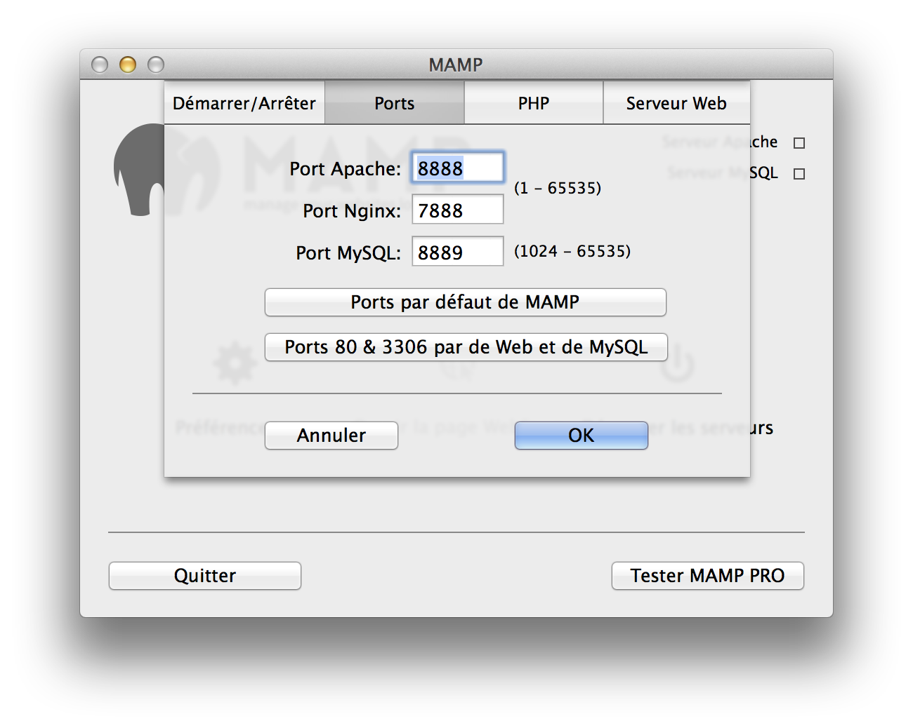
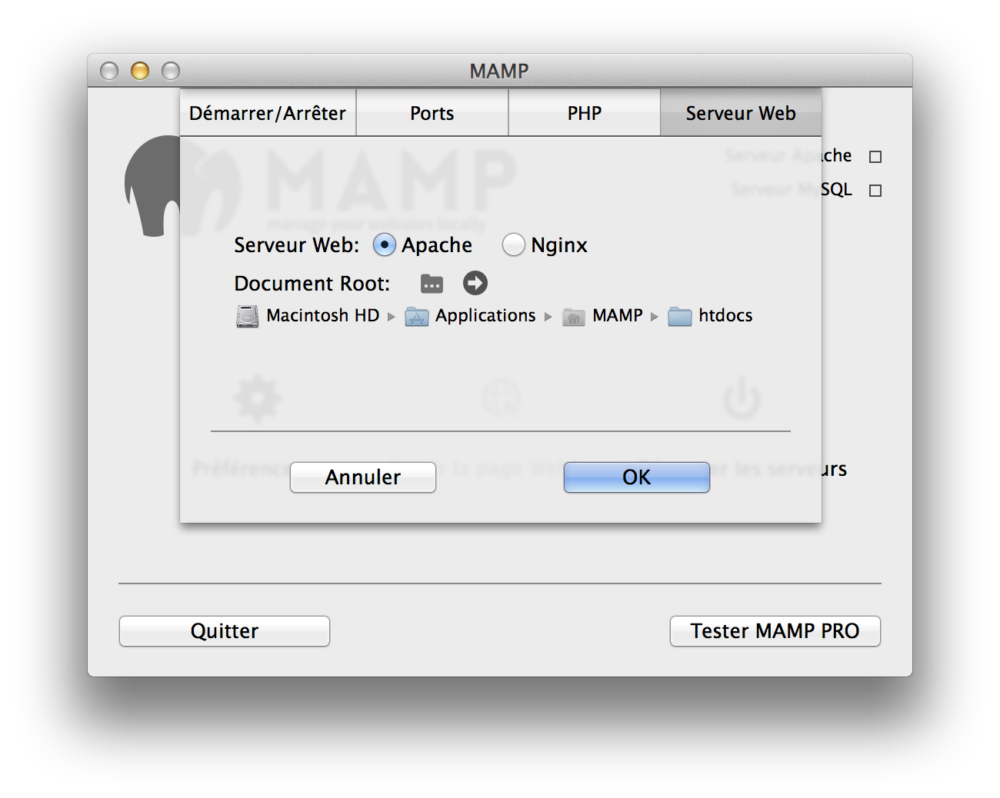

Ouvrez le Terminal et saisissez :/Applications/MAMP/Library/bin/mysqladmin -u root -p password <NEWPASSWORD>
Au lieu de <NEWPASSWORD> utilisez le nouveau mot de passe ‡ affecter.
Aprés cela, vous devez aussi redéfinir le mot de passe MySQL pour phpMyAdmin et les autres scripts qui fonctionnent sous MAMP.
Pour phpMyAdmin, vous devez éditer le fichier /Applications/MAMP/bin/phpMyAdmin/config.inc.php
Vous pouvez changer les ports dans le programme MAMP en affichant les Préférences :

Par défaut, les pages PHP et HTML doivent être copiés dans le dossier htdocs qui est situé sous /Applications/MAMP. Ce dossier est appelé "racine du document". Vous pouvez modifier le chemin d'accès au racine du document dans le programme MAMP sous Préférences:

Vous avez probablement défini le port d'Apache à une valeur inférieure à 1024. Dans un systéme Unix, comme Mac OS X, vous devez posséder les droits d'administrateur (root) pour lancer des services IP dont les numéros de ports sont inférieurs à 1024.